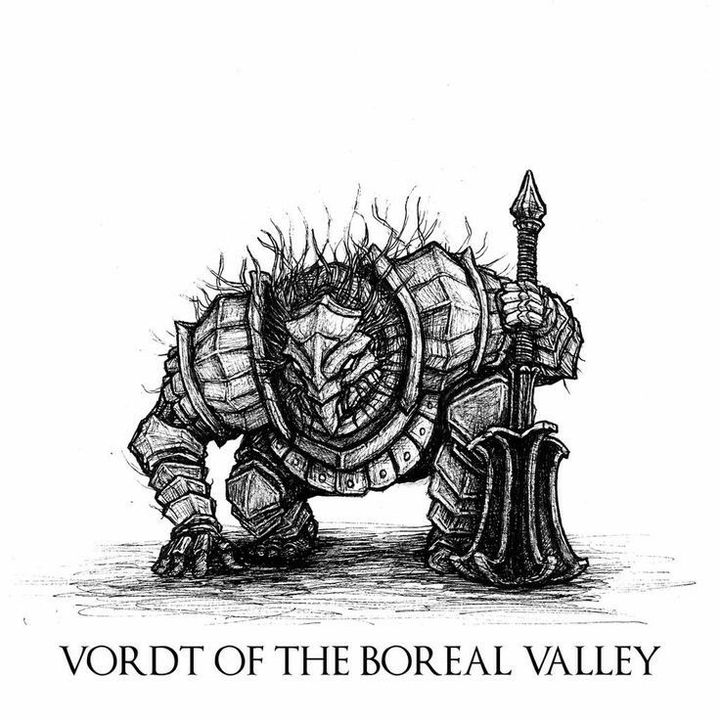
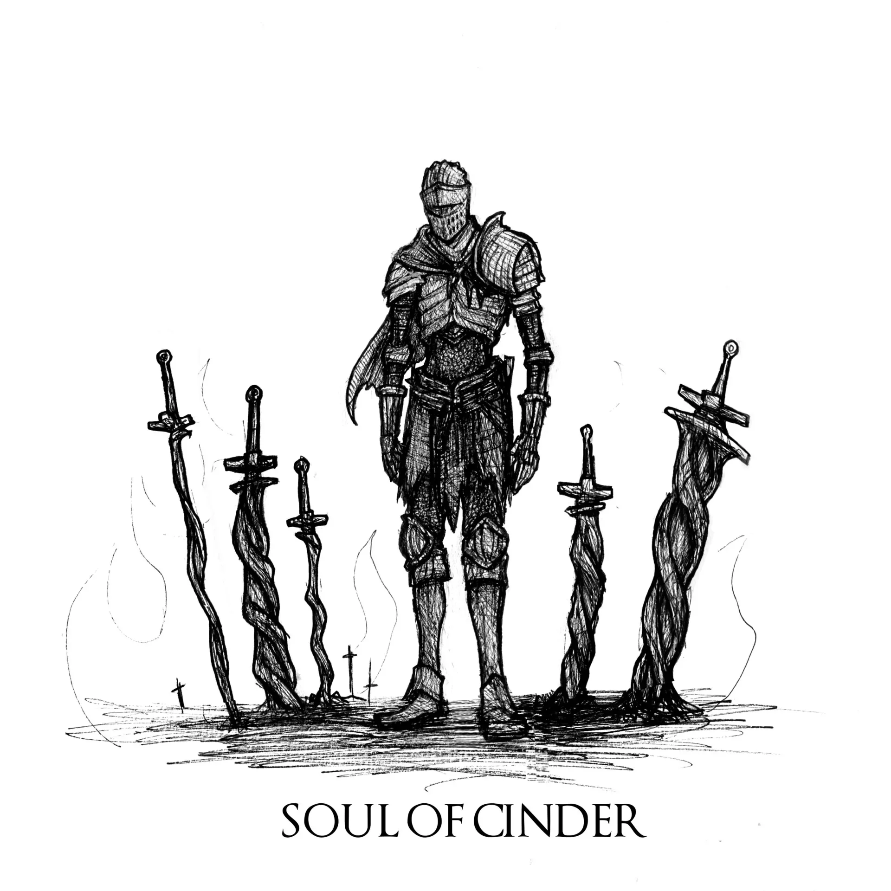
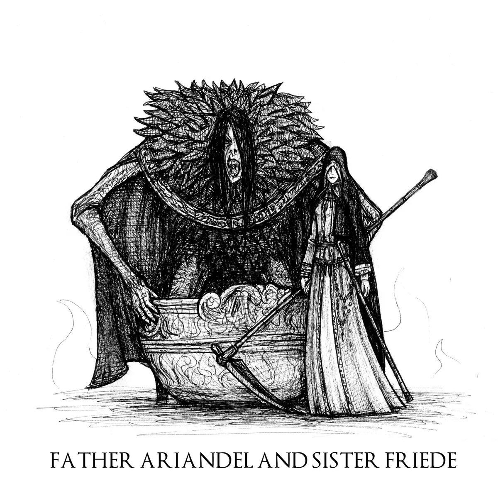
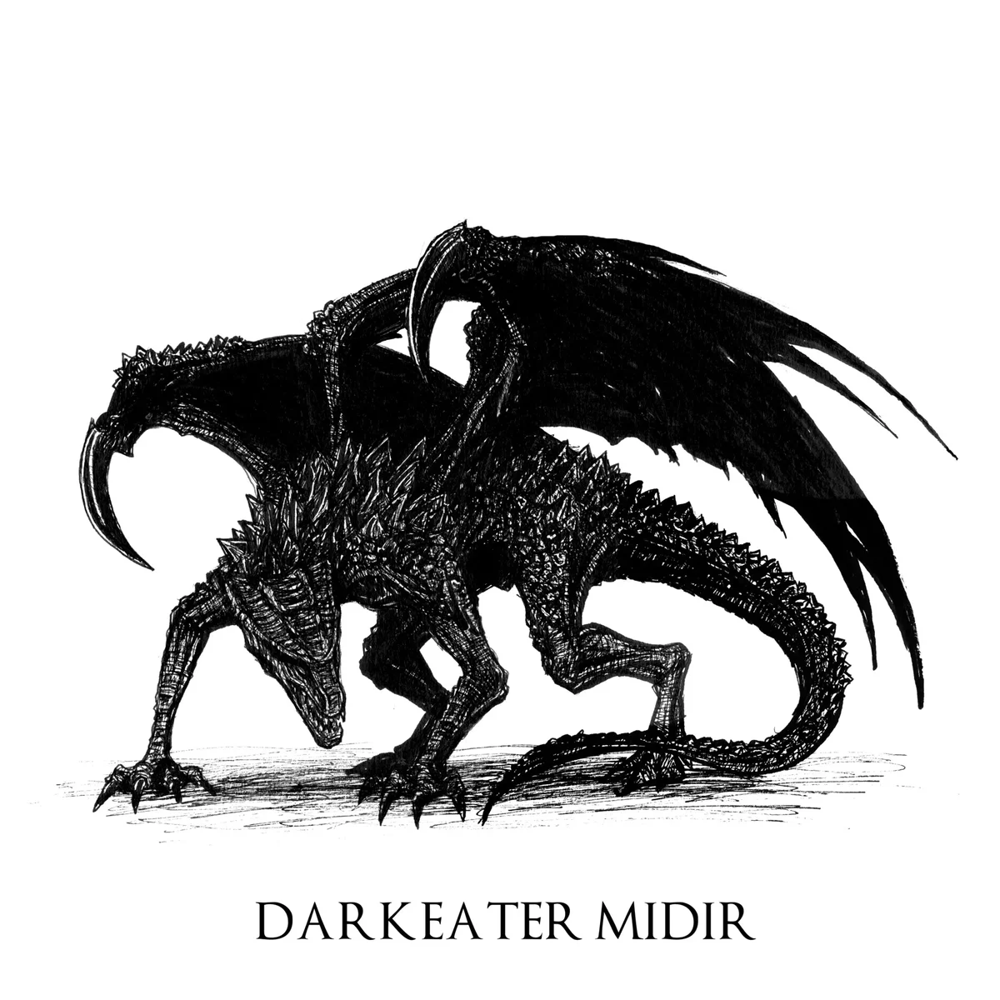

¿Que es Dark Souls III?
Dark Souls III es un juego de rol de acción de 2016 desarrollado por FromSoftware y publicado por Bandai
Namco Entertainment para PlayStation 4, Xbox One y PC. Tercera y última entrega de la saga Dark Souls,
se juega en una perspectiva en tercera persona, y los jugadores tienen acceso a varias armas, armaduras,
magia y consumibles que pueden usar para luchar contra sus enemigos. Hidetaka Miyazaki, el creador de la
saga, volvió para dirigir el juego tras dejar las tareas de desarrollo de Dark Souls II en manos de
otros.
Ambientado en el reino de Lothric, el jugador tiene la tarea de sobrevivir a un apocalipsis
que se aproxima, provocado por el conflicto entre la Era del Fuego y aquellos marcados con la Señal
oscura, el clásico conflicto dado en las anteriores entregas de la saga. Para sobrevivir en este caso,
el personaje del jugador deberá enfrentarse a los Señores de la Ceniza, héroes del pasado que enlazaron
la Primera Llama.
Su trayecto en la industria de los videojuegos
Dark Souls III fue calificado por los críticos como una
conclusión digna y adecuada para la saga. Distribuyó más de tres millones de copias en sus primeros dos
meses y más de 10 millones para 2020. También fueron lanzadas dos expansiones de contenido descargable
(DLC), Ashes of Ariandel y The Ringed City. Dark Souls III: The Fire Fades Edition, una edición que
contiene el juego base y ambas expansiones, fue lanzada en abril de 2017, vendiendo más de tres millones
de copias en todo el mundo en menos de dos meses tras su
lanzamiento.
Al igual que en Dark Souls II, está disponible el viaje rápido mediante hogueras desde el comienzo del
juego siempre y cuando el personaje del jugador coloque la Espada en espiral en el Santuario de Enlace.
Sus Bosses mas memorables

Vordt fue un Caballero Precursor del Valle Boreal que sirvió al Pontífice Sulyvahn, además de ser uno de los muchos caballeros en recibir el Ojo izquierdo del Pontífice, un anillo embrujado que transformaba lentamente a su portador en una bestia. Vordt sirvió al Pontífice junto a la Bailarina del Valle Boreal hasta su transformación.

Soul of Cinder parece ser un caballero alto que lleva una armadura muy desgastada y carbonizada. Su arma preferida es la Firelink Greatsword, una versión masiva de la Coiled Sword que puede cambiar su forma para adaptarse a las necesidades de su portador. Cambia los movimientos de ataque con mucha suavidad, lo que dificulta que los jugadores contraataquen. Las diferentes tácticas de lucha crean una pelea de jefe muy memorable.

Friede viste el Conjunto de la Orden y está armada con una guadaña. Tiene marcas de quemaduras en
el lado derecho de su cara.
El Padre Ariandel es un enorme monstruo, cubierto de plumas,
con el pelo largo y negro y el rostro decaído. Su cabeza es desproporcionadamente pequeña
comparada con el resto de su cuerpo y sus miembros son largos y delgados.
Está atado a una silla desde la que hunde su cabeza dentro de un gran cuenco parecido a la
Vasija del Señor, que utiliza como arma.

Es un gigantesco dragón con cuatro alas que sirve como uno de los guardianes de La Ciudad
Anillada. Su eterna batalla contra la oscuridad ha comenzado a corromperlo, concediéndole la
capacidad de canalizar la magia del Abismo a través de su destructivo aliento de fuego.
A pesar de ser leal a los dioses, Shira dice que la bestia ya está empezando a decaer y que
pronto perderá sus votos (es decir, olvidará su lealtad a Filianore y será un peligro para
ésta), por lo que le encomienda al jugador acabar con él.